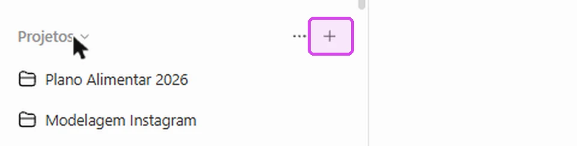
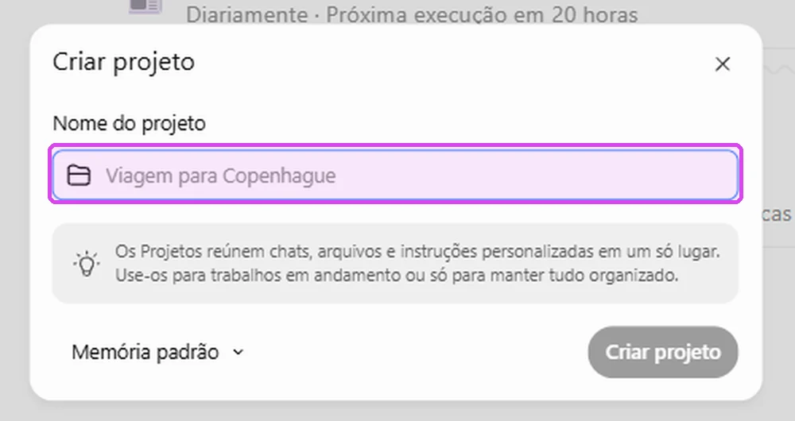
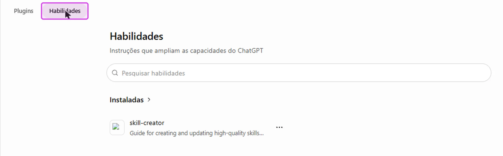
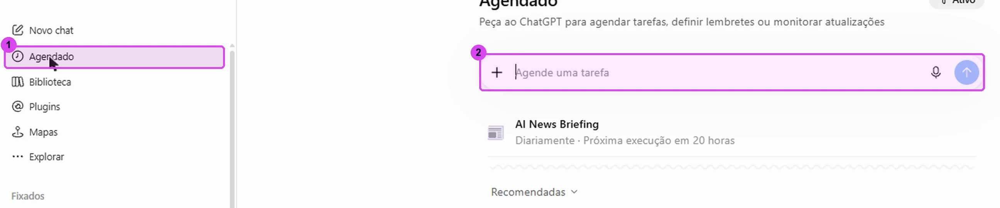
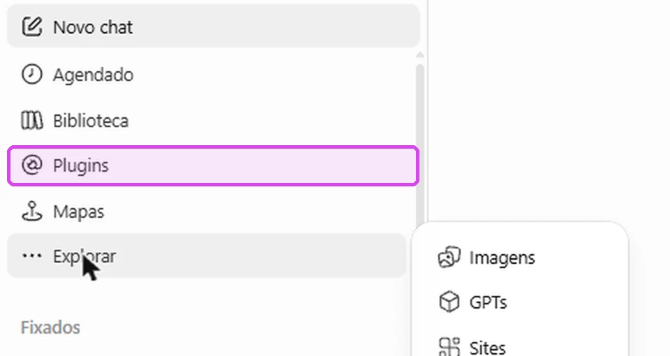
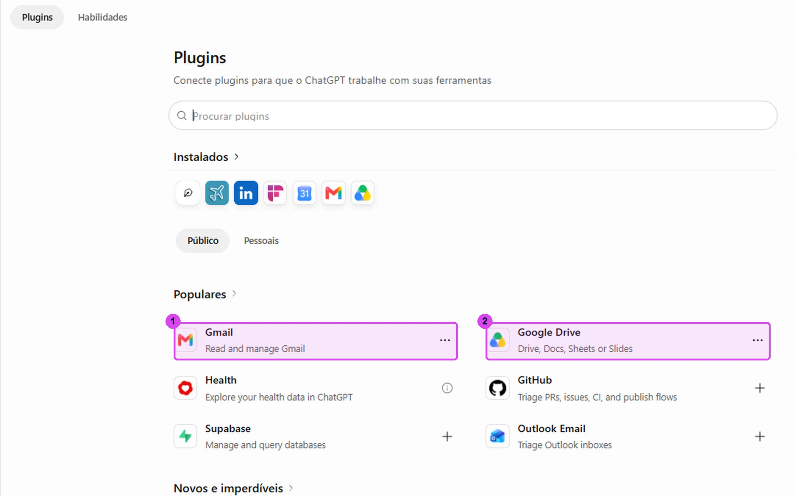
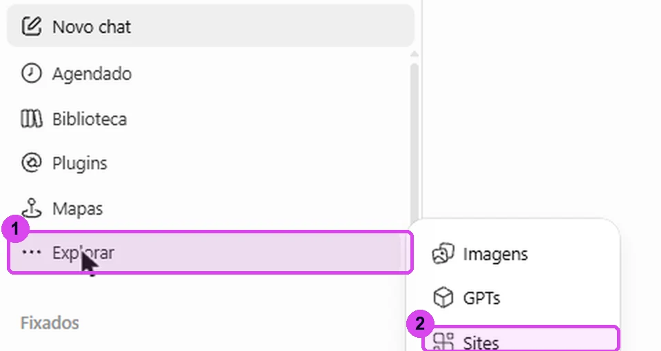
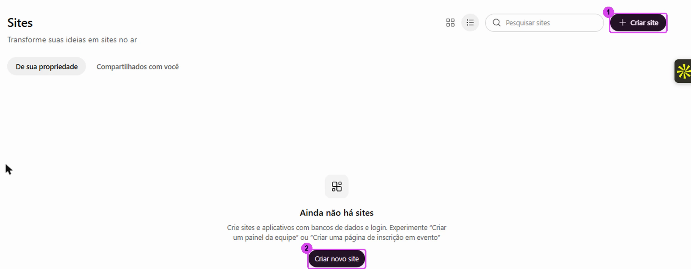
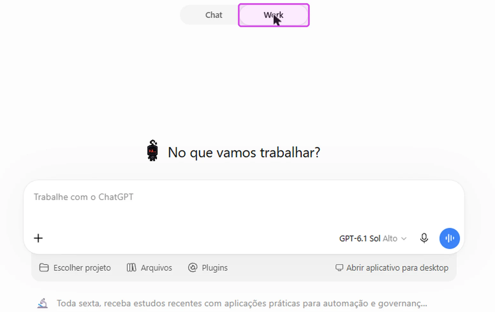
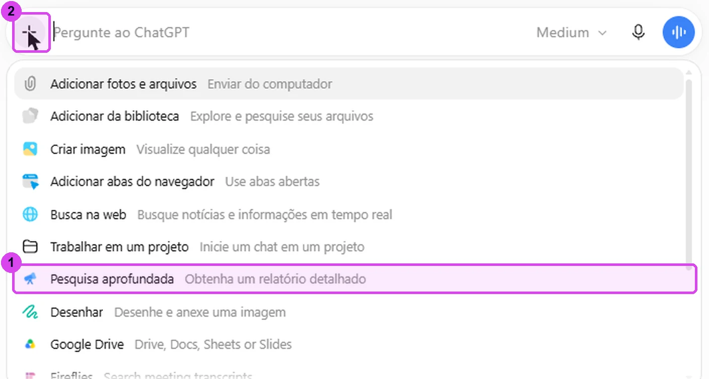

7 recursos do ChatGPT que quase ninguém usa
Onde encontrar cada um, quando usar e um exemplo pronto. Sete funções que mudam o jeito de trabalhar com o ChatGPT.
Os 7 recursos, um por um
Cada um com o caminho no menu, quando usar e um exemplo.
Projetos
Uma pasta para um assunto só. Ela reúne as conversas, os arquivos e as instruções daquele trabalho, e toda conversa dentro dela já começa com o contexto. Passe o mouse em Projetos, na barra lateral, e clique no +.
Quando usar: quando você cansou de explicar seu negócio toda vez que abre um chat.
Exemplo: um projeto inteiro para a Black Friday da sua loja, com estratégia, decisões e análises no mesmo lugar.


Habilidades (Skills)
Um manual que você escreve uma vez, com o seu jeito de fazer uma tarefa. Depois é só reutilizar em qualquer chat ou projeto. Em Plugins, clique na aba Habilidades.
Quando usar: quando a tarefa se repete e você não quer repetir o comando.
Exemplo: o modelo da sua proposta, o tom dos seus e-mails, a estrutura do relatório da empresa.

Tarefas agendadas
Você descreve a rotina uma vez, escolhe a frequência e o ChatGPT entrega sozinho, sem você abrir o chat.
Quando usar: quando o trabalho se repete e você quer que aconteça sem você pedir.
Exemplo: o resumo da sua agenda toda manhã, o relatório de vendas toda segunda.

Disponível também no plano gratuito desde agosto de 2026. O número de tarefas ativas muda de acordo com o plano.
Plugins (os antigos apps)
Ligam o ChatGPT às ferramentas que você já usa: Gmail, Drive, Calendário e outras. Aí você pede para ele buscar, ler e trabalhar direto nessas informações, sem copiar e colar.
Exemplo: "acha aquele contrato no meu Drive e resume as cláusulas de pagamento".


O que antes se chamava "apps" virou Plugins em julho de 2026. As conexões que você já tinha continuam funcionando.
Sites
Você descreve o que precisa e o ChatGPT cria um site de verdade ou uma ferramenta interativa, sem programar. Na barra lateral, o Sites fica dentro de Explorar.
Exemplo: um painel de acompanhamento de projetos, um portal interno, uma página simples para um aplicativo pequeno.


Recurso em beta. Não está disponível nos planos Free e Go.
ChatGPT Work
No topo da tela, troque de Chat para Work. Em vez de só responder no chat, o ChatGPT passa a agir: acessa sites, cria e edita arquivos e organiza pastas para você.
Quando usar: quando você quer parar de responder perguntas e passar a delegar o trabalho.

Planos pagos, exceto Free e Go. A liberação é gradual, então ele pode demorar a aparecer na sua conta.
Pesquisa aprofundada
Use quando precisar de pesquisa de verdade. Você clica no + da caixa de mensagem, escolhe Pesquisa aprofundada e diz o que quer investigar. O ChatGPT cruza as fontes e organiza tudo em um relatório.
Dica: ela leva alguns minutos. Deixe trabalhando e volte depois.

Limites de uso e disponibilidade mudam de acordo com o plano.
Teste agora, em um minuto cada
Copie, cole no ChatGPT e troque o que estiver entre colchetes pelo seu caso.
Teste 1 · Projetos
Instruções para o seu projeto
Teste 2 · Tarefas agendadas
Resumo da agenda toda manhã
Teste 3 · Sites
Painel de acompanhamento
Teste 4 · Pesquisa aprofundada